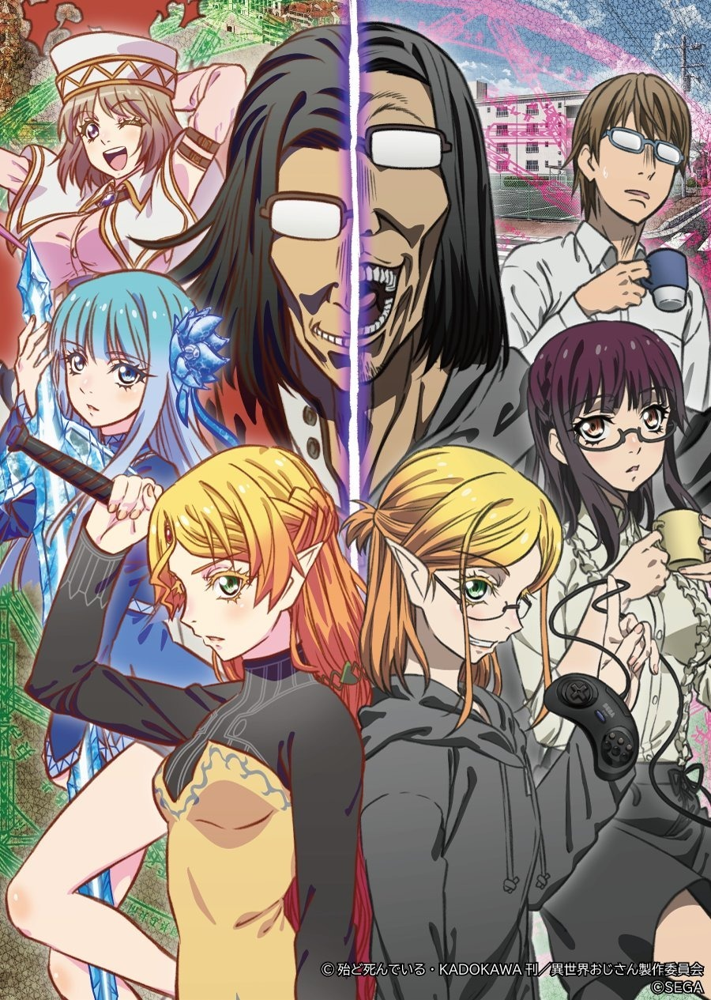

AnimeInterester
異世界歸來的舅舅

故事簡介
外甥敬文前去探望從十七年間的昏睡狀態中甦醒的舅舅時，親眼目睹他施放出驚奇的魔法！ ──沒錯，舅舅是從異世界歸來的生還者！ 精靈的言語利刃直刺而來、 封閉心靈的少女錯身而過── 在劍與魔法的世界生活，充滿了血與淚……由舅舅口述的異世界嚴酷回憶，與不受限制又令人懷念的遊戲體驗談交織而成。
製作人員
原作：殆ど死んでいる
導演：河合滋樹
系列構成：猪原健太
角色設計：大田和寛
服裝設計：須藤智子
怪物設計：寺尾憲治
道具設計：岩畑剛一 / 鈴木典孝
設計工作：加藤千惠 / コレサワシゲユキ / 燈夢
美術設定：青木薰 / 緒川マミオ / 中島美佳
美術監督：高峰義人
色彩設計：安部なぎさ
特殊效果：谷口久美子
攝影監督：峰岸健太郎
3D導演：輕部優 / 小高みちる
剪輯：須藤瞳
音樂：末廣健一郎
音樂製作：KADOKAWA
音響監督：明田川仁
音響效果：上野勵
音響制作：Magic Capsule
動畫製作人：吉川綱樹
聲優名單
舅舅：子安武人
高丘敬文：福山潤
藤宮：小松未可子
精靈：戸松遥
梅貝爾雷貝爾：悠木碧
艾莉西亞：豐崎愛生
愛德華：鈴村健一
萊加：岡本信彦
澤江：金元壽子
各集標題
| 話數 | 標題 |
|---|---|
| 1 | 漫長17年後，我總算從大巴哈馬魯異世界歸來！ |
| 2 | 《守護者列傳》應該是第一名！ |
| 3 | 我是你舅媽 |
| 4 | 你陪我度過辛苦時光 |
| 5 | 我有次差點被暗殺 |
| 6 | 所以我被扔進畸形秀的地下室... |
| 7 | 看吧，SEGA 遊戲對人生大有幫助！ |
| 8 | 我變身成我所知的最強大生物才存活下來 |
| 9 | 這是冰之精靈要求冷氣魔法的代價 |
| 10 | 講禮節…的前提是對方把我當人看 |
| 11 | 不、不是、這不是因為看了色色的東西… |
| 12 | 名字很重要，那傢伙也是這麼說的 |
| 13 | 多虧了大家，謝謝 |